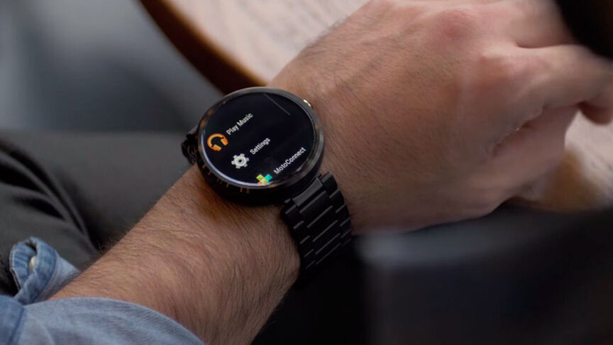
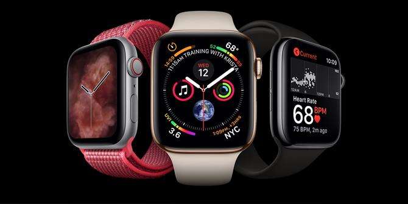
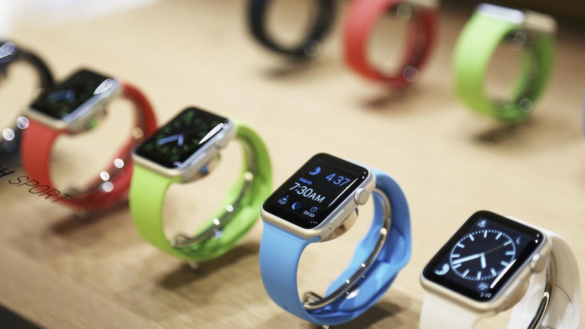

Por qué el Apple Watch es el reloj que merece la pena aunque sea caro

El Apple Watch es caro, sí. Pero sigue siendo el mejor smartwatch que puedes comprarte, con diferencia.
Hace un tiempo me compré un smartwatch. Nada lujoso, un Samsung Galaxy Gear S3 que me dejaron bastante bien de precio. Era mi oportunidad; por fin iba a probar ese gadget tan polarizado. Hay quienes lo aman, hay quienes lo odian y están los amantes del Apple Watch. Por lo tanto, era mi oportunidad para olvidarme de mi smartphone.
La realidad... no fue así. A día de hoy ese smartwatch está vendido. Sí, me deshice de él, y no he vuelto a tener absoluto interés en alguno. Y viendo las ventas de los smartwatches actuales y del Apple Watch, queda claro que el reloj inteligente no es el aparato futurista que sus primeros modelos nos vendieron.
Pero, ¿por qué merece entonces la pena un reloj que cuesta más que un smartphone promedio? Recordemos, el último modelo vale, en su versión básica, unos 449 euros. Hay varios factores para entender el por qué el reloj de Apple sí merece la pena.
Apple Watch sí, el resto no

El pasado mes de febrero hablamos en OMICRONO de una noticia, cuanto menos, llamativa: el Apple Watch vendió él solito más que toda la industria relojera suiza... junta. Los datos son increíbles; en 2019 se vendieron un 35% más de relojes de Apple que en 2018 alcanzando los casi 31 millones de unidades vendidas. Superan así los 21.1 millones de la industria relojera suiza.
Según datos de Strategy Analytics, el Apple Watch mantuvo el liderazgo con un impresionante 48% de mercado de relojes global, con Samsung en la segunda posición y con Fitbit en la tercera. Y es verdad que los envíos de relojes inteligentes han crecido en 2019 bastante, un 42%, pero siguen siendo cifras no demasiado impresionantes.
Concretamente, de 10 millones en el primer trimestre de 2019 a 14.2 respecto al año 2018. En ese período, los relojes de Apple fueron líderes, con más del 51% de las ventas. Pero, de nuevo, son números un poco bajos, ya que por ejemplo el segundo puesto lo ostentó Samsung con unos 1,9 millones de relojes en ese momento.
Es por ello que se deduce que los relojes inteligentes no se venden, y los "pocos" que se venden en el mercado reflejan un éxito increíble por parte de Apple. El Apple Watch vende mucho, pero el resto no tanto. ¿Qué está ocurriendo entonces? ¿Por qué vende tanto siendo tan caro? Hay varios factores para entender qué ocurre con los smartwatches actuales.
Integración con el ecosistema

A todos nos gustaría que el Apple Watch fuera compatible con Android, pero no se puede negar que el reloj de Apple se integra de forma excelente con el ecosistema Apple. Si tienes un iPad, un iPhone o un ordenador Mac el reloj cobra nuevos usos que, para según qué usuarios, pueden ser vitales.
Si llevamos el Apple Watch puesto no tendremos que poner la contraseña a nuestro Mac, por ejemplo. Las aplicaciones que solemos usar en Apple están tan pulidas que tienen mucha más usabilidad en el Apple Watch, y en la mayor de las ocasiones podemos tener esa misma app de forma "nativa" en la tienda del reloj. Muchas de las funciones que también encontramos tanto en una como en otra plataforma funcionan con este dispositivo.
Esto es, bajo mi experiencia, algo de lo que adolecían los watch de Android. No tenemos un sistema operativo común; compiten 3 grandes: el sistema operativo de Huawei, Wear OS, el de Google y Tizen. Por otra parte tenemos el software de los relojes de Xiaomi, que no suele ser del agrado de todo el mundo.
Los Tizen por ejemplo se integran muy bien con los servicios de Samsung, pero si no los usas, no tienen mucha usabilidad fuera de él. Wear OS, incluso a día de hoy, no es un sistema tan pulido ni tan mayoritario como lo es watchOS, y peca de una falta de calidad bastante notoria en sus apps y en lo que puedes hacer con ellas.
Apps de calidad: olvídate del móvil
Sintiéndolo mucho por rivales como Tizen o WearOS, las apps del Apple Watch sí que consiguen que te olvides del smartphone. Lo consiguen gracias a su calidad, a su integración con el ya mencionado ecosistema y con una usabilidad perfectamente adecuada al tamaño y usabilidad del propio reloj en sí.
Este es un punto en el que la competencia adolece y a mi parecer de forma bastante grave. Las apps que solía usar en mi antiguo reloj no estaban bien optimizadas, no funcionaban bien y además requerían sorprendentemente que usara mi smartphone junto a ellas. Un hecho que, a mi parecer, atenta contra el mero propósito de llevar un smartwatch.
Por si fuera poco, la tienda de aplicaciones de watchOS está nutrida de multitud de apps y los desarrolladores de la tienda de Apple suelen comprometerse a lanzar apps para el reloj lo suficientemente pulidas como para que puedan funcionar por sí solas.
La exclusividad
Hablamos de Apple, y por lo tanto hablamos de exclusividad. Llevar un producto de Apple encima te da caché, exclusividad. No son productos en absoluto baratos, y gracias a la imagen de marca que goza la manzanita es inevitable pensar que el que lo ha comprado, cuanto menos, tiene dinero. Una idea muy extendida entre los jóvenes.
El estatus social es parte del por qué el Apple Watch tiene tanto éxito. Además de que es el mejor reloj inteligente para tu ecosistema Apple, este te da prestigio económico frente a otras alternativas. Pocas personas se impresionarán si nos ven con un reloj de otra marca, más allá de parecerles curioso el aparatito.
Desde luego desearíamos que el Apple Watch fuera -algo- más barato. Pero incluso las generaciones pasadas de Apple Watch dan ese toque de status que muchos buscan y que ninguno de los competidores de Apple consigue.